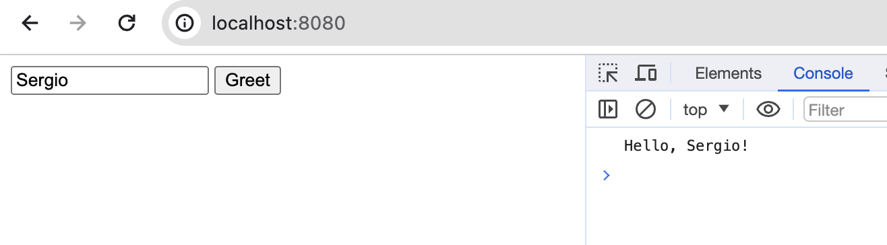

mn create-app example.micronaut.micronautguide \
--features=views-thymeleaf \
--build=gradle \
--lang=java \
--test=junitTable of Contents
- 1. Getting Started
- 2. What you will need
- 3. Solution
- 4. Writing the Application
- 5. Views
- 6. Stimulus
- 7. WebJars
- 8. WebJars via Static Resources
- 9. Stimulus via WebJars
- 10. WebJars Test
- 11. Controller
- 12. View
- 13. Controller Test
- 14. Testing the Application
- 15. Running the Application
- 16. GraalVM Resource Configuration
- 17. Native Tests
- 18. Generate a Micronaut Application Native Executable with GraalVM
- 19. Next Steps
- 20. Help with the Micronaut Framework
- 21. License
Stimulus with WebJars
Learn how to load Stimulus Javascript library with WebJars
Authors: Sergio del Amo
Micronaut Version: 4.9.1
1. Getting Started
In this guide, we will create a Micronaut application written in Java.
2. What you will need
To complete this guide, you will need the following:
-
Some time on your hands
-
A decent text editor or IDE (e.g. IntelliJ IDEA)
-
JDK 21 or greater installed with
JAVA_HOMEconfigured appropriately
3. Solution
We recommend that you follow the instructions in the next sections and create the application step by step. However, you can go right to the completed example.
-
Download and unzip the source
4. Writing the Application
Create an application using the Micronaut Command Line Interface or with Micronaut Launch.
If you don’t specify the --build argument, Gradle with the Kotlin DSL is used as the build tool. If you don’t specify the --lang argument, Java is used as the language.If you don’t specify the --test argument, JUnit is used for Java and Kotlin, and Spock is used for Groovy.
|
The previous command creates a Micronaut application with the default package example.micronaut in a directory named micronautguide.
If you use Micronaut Launch, select Micronaut Application as application type and add views-thymeleaf features.
| If you have an existing Micronaut application and want to add the functionality described here, you can view the dependency and configuration changes from the specified features, and apply those changes to your application. |
5. Views
To use the Thymeleaf Java template engine to render views in a Micronaut application, add the following dependency on your classpath.
build.gradle
implementation("io.micronaut.views:micronaut-views-thymeleaf")6. Stimulus
This tutorial uses Stimulus in a Micronaut application.
Stimulus is a JavaScript framework with modest ambitions. It doesn’t seek to take over your entire front-end—in fact, it’s not concerned with rendering HTML at all. Instead, it’s designed to augment your HTML with just enough behavior to make it shine.
7. WebJars
We use WebJars to load Stimulus into our application.
WebJars are client-side web libraries (e.g. jQuery & Bootstrap) packaged into JAR (Java Archive) files.
Explicitly and easily manage the client-side dependencies in JVM-based web applications
Use JVM-based build tools (e.g. Maven, Gradle, sbt, …) to download your client-side dependencies
Know which client-side dependencies you are using
Transitive dependencies are automatically resolved and optionally loaded via RequireJS
Deployed on Maven Central
8. WebJars via Static Resources
To use WebJars, we need to add a static resources entry in the application’s configuration.
src/main/resources/application.properties
micronaut.router.static-resources.webjars.paths=classpath:/META-INF/resources/webjars
micronaut.router.static-resources.webjars.mapping=/webjars/**9. Stimulus via WebJars
10. WebJars Test
You can test the Javascript library is exposed:
src/test/java/example/micronaut/WebJarsStimulusTest.java
package example.micronaut;
import io.micronaut.http.client.BlockingHttpClient;
import io.micronaut.http.client.HttpClient;
import io.micronaut.http.client.annotation.Client;
import io.micronaut.test.extensions.junit5.annotation.MicronautTest;
import org.junit.jupiter.api.Test;
import static org.junit.jupiter.api.Assertions.assertDoesNotThrow;
@MicronautTest
class WebJarsStimulusTest {
@Test
void stimulusViaWebJarsAvailable(@Client("/") HttpClient httpClient) {
BlockingHttpClient client = httpClient.toBlocking();
assertDoesNotThrow(() -> client.exchange("/webjars/hotwired__stimulus/3.2.1/dist/stimulus.js"));
}
}11. Controller
Create a controller which renders a View.
src/main/java/example/micronaut/HomeController.java
package example.micronaut;
import io.micronaut.http.annotation.Controller;
import io.micronaut.http.annotation.Get;
import io.micronaut.views.View;
import java.util.Collections;
import java.util.Map;
@Controller (1)
class HomeController {
@Get (2)
@View("index.html") (3)
Map<String, Object> index() {
return Collections.emptyMap();
}
}| 1 | The class is defined as a controller with the @Controller annotation mapped to the path /. |
| 2 | The @Get annotation maps the method to an HTTP GET request. |
| 3 | Use View annotation to specify which template to use to render the response. |
12. View
The view builds a simple controller described in the Hello Stimulus tutorial on the Stimulus website.
src/main/resources/views/index.html
<!DOCTYPE html>
<html lang="en" th:fragment="layout(title, script, content)" xmlns:th="http://www.thymeleaf.org">
<head>
<meta charset="utf-8">
<meta name="viewport" content="width=device-width, initial-scale=1">
<script type="module">
import { Application, Controller } from "/webjars/hotwired__stimulus/3.2.1/dist/stimulus.js"
window.Stimulus = Application.start()
Stimulus.register("hello", class extends Controller {
static targets = [ "name" ]
greet() {
const element = this.nameTarget
const name = element.value
console.log(`Hello, ${name}!`)
}
})
</script>
</head>
<body>
<div data-controller="hello">
<input data-hello-target="name" type="text">
<button data-action="click->hello#greet">Greet</button>
</div>
</body>
</html>13. Controller Test
The controller test verifies the application renders an HTML page.
src/test/java/example/micronaut/HomeControllerTest.java
package example.micronaut;
import io.micronaut.http.client.BlockingHttpClient;
import io.micronaut.http.client.HttpClient;
import io.micronaut.http.client.annotation.Client;
import io.micronaut.test.extensions.junit5.annotation.MicronautTest;
import org.junit.jupiter.api.Test;
import static org.junit.jupiter.api.Assertions.assertDoesNotThrow;
import static org.junit.jupiter.api.Assertions.assertTrue;
@MicronautTest
class HomeControllerTest {
@Test
void rootPathServesHtml(@Client("/") HttpClient httpClient) {
BlockingHttpClient client = httpClient.toBlocking();
String html = assertDoesNotThrow(() -> client.retrieve("/"));
assertTrue(html.contains("<!DOCTYPE html>"));
}
}14. Testing the Application
To run the tests:
./gradlew testThen open build/reports/tests/test/index.html in a browser to see the results.
15. Running the Application
To run the application, use the ./gradlew run command, which starts the application on port 8080.
Go to http://localhost:8080 enter your name and click the button. You will see in the console a message:

16. GraalVM Resource Configuration
We need the following configuration to access resources in Native Image
By default, the native-image builder will not integrate any of the resources that are on the classpath into the native executable.
Create a new file src/main/resources/META-INF/native-image/example.micronaut.micronautguide/resource-config.json:
src/main/resources/META-INF/native-image/example.micronaut.micronautguide/resource-config.json
{
"resources": {
"includes": [
{"pattern": "META-INF/resources/webjars/hotwired__stimulus/3.2.1/dist/stimulus.js$"}
]
}
}17. Native Tests
The io.micronaut.application Micronaut Gradle Plugin automatically integrates with GraalVM by applying
the Gradle plugin for GraalVM Native Image building.
This plugin supports running tests on the JUnit Platform as native images. This means that tests will be compiled and executed as native code.
To execute the tests, execute:
./gradlew nativeTestThen open build/reports/tests/test/index.html in a browser to see the results.
INFO: A test may be disabled within a GraalVM native image via the @DisabledInNativeImage annotation.
18. Generate a Micronaut Application Native Executable with GraalVM
We will use GraalVM, an advanced JDK with ahead-of-time Native Image compilation, to generate a native executable of this Micronaut application.
Compiling Micronaut applications ahead of time with GraalVM significantly improves startup time and reduces the memory footprint of JVM-based applications.
Only Java and Kotlin projects support using GraalVM’s native-image tool. Groovy relies heavily on reflection, which is only partially supported by GraalVM.
|
18.1. GraalVM Installation
Java 21
sdk install java 21.0.5-graalFor installation on Windows, or for a manual installation on Linux or Mac, see the GraalVM Getting Started documentation.
The previous command installs Oracle GraalVM, which is free to use in production and free to redistribute, at no cost, under the GraalVM Free Terms and Conditions.
Alternatively, you can use the GraalVM Community Edition:
Java 21
sdk install java 21.0.2-graalce18.2. Native Executable Generation
To generate a native executable using Gradle, run:
./gradlew nativeCompileThe native executable is created in build/native/nativeCompile directory and can be run with build/native/nativeCompile/micronautguide.
It is possible to customize the name of the native executable or pass additional parameters to GraalVM:
build.gradle
graalvmNative {
binaries {
main {
imageName.set('mn-graalvm-application') (1)
buildArgs.add('-Ob') (2)
}
}
}| 1 | The native executable name will now be mn-graalvm-application |
| 2 | It is possible to pass extra build arguments to native-image. For example, -Ob enables the quick build mode. |
Go to http://localhost:8080 enter your name and click the button. You will see in the console a message.
19. Next Steps
20. Help with the Micronaut Framework
The Micronaut Foundation sponsored the creation of this Guide. A variety of consulting and support services are available.
21. License
| All guides are released with an Apache license 2.0 license for the code and a Creative Commons Attribution 4.0 license for the writing and media (images…). |